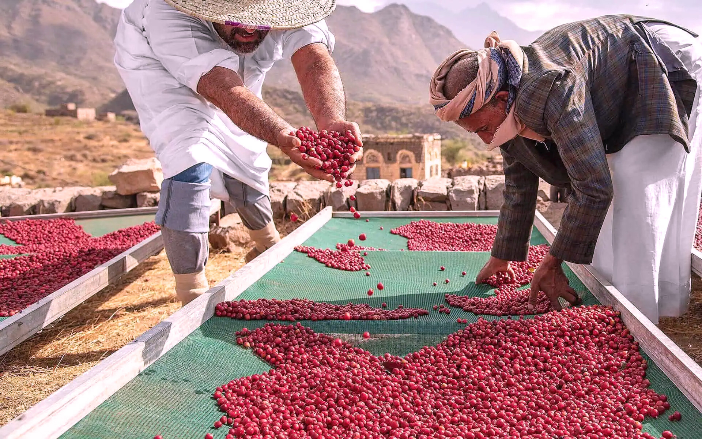
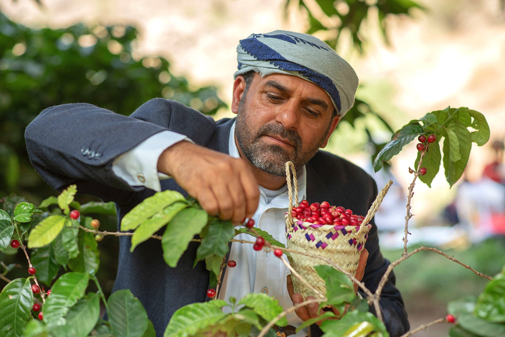

The Original Mocha
Yemen is where coffee was first commercially cultivated over 500 years ago. The port city of Mocha gave its name to coffee's most famous flavor profile - the perfect balance of chocolatey richness and fruited brightness that defines true Yemeni coffee.
Unchanged Traditions
While other coffee regions industrialized, Yemeni farmers still:
- Hand-pick only the ripest cherries
- Sun-dry beans on ancient stone terraces
- Process using methods unchanged for centuries
What Makes It Special
Yemeni coffee develops unique flavors because:
Altitude: Grown at 1,500-2,500m on mountain terraces
Climate: Arid conditions concentrate flavors in the bean
Varietals: Heirloom strains found nowhere else
Processing: Natural drying creates intense fruit notes
A Taste Like No Other
Expect flavors you won't find in other coffees:
- Wine-like complexity
- Dark chocolate richness
- Dried fruit sweetness
- Spicy, earthy undertones